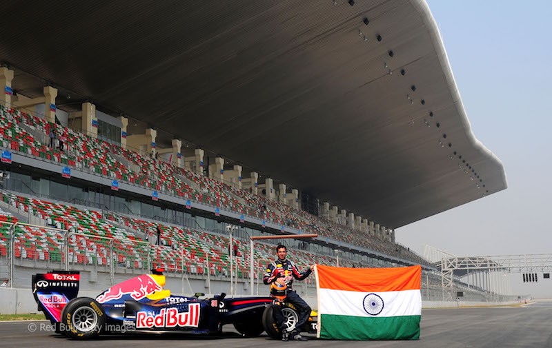

INTERNATIONAL FORMULA 1 TEAMS

INDIAN FORMULA 1 TEAM

AUSTRALIAN FORMULA 1 TEAM
Firstly, sign up at fantasy.formula1.com and pick a team, or log in using your existing F1.com credentials. You will then have $100m at your disposal to pick five drivers and one constructor. Rinse and repeat you can create up to three teams. Keep your eye on the price of each driver, and make sure to lock in your selections before qualifying on Saturday evening. This deadline may vary over the year, thanks to Sprint events.

Formula One was first defined in 1946 by the Commission Sportive Internationale (CSI) of the FIA, forerunner of FISA, as the premier single-seater racing category in worldwide motorsport to become effective in 1947. This new "International Formula" was initially known variously as Formula A, Formula I, or Formula 1 with the corresponding "Voiturette" formula being titled Formula B, Formula II, or Formula 2. When the 500c formula was internationally recognised as Formula 3 in 1950 it was never titled as "Formula C" so the three International Formulae were then "officially" titled Formula 1, Formula 2 and Formula 3. In the beginning, the formula was largely based on pre-World War II regulations defined by engine capacity. The regulation expected to bring a new balance between supercharged and normally aspirated cars. Non-supercharged 4.5-litre pre-war Grand Prix cars were allowed to race against the pre-war 1.5-litre supercharged 'voiturettes', while pre-war supercharged 3-litre Grand Prix cars were banned.
There is some debate as to what can be considered to be the first Formula 1 race. The first race under the new regulations was the 1946 Turin Grand Prix held on 1 September, the race being won by Achille Varzi in an Alfa Romeo 158 Alfetta - but this was before the Formula was officially in place. The next contender is the 1947 Swedish Winter Grand Prix which was won by Reg Parnell driving an ERA - but this race was run on ice and some consider that it therefore was not a "proper" race (there is also some doubt whether it was a Formula 1 race or a Formule Libre race). The third claimant is the 1947 Pau Grand Prix which was won by Nello Pagani driving a Maserati 4CL, which is irrefutable. Championships for drivers or constructors were not introduced immediately. In the early years there were around 20 races held from late Spring to early Autumn (Fall) in Europe, although not all of these were considered significant. Most competitive cars came from Italy, particularly Alfa Romeo. Races saw pre-war heroes like Rudolf Caracciola, Manfred Von Brauchitsch and Tazio Nuvolari end their careers, while drivers like Alberto Ascari and Juan Manuel Fangio rose to the front.